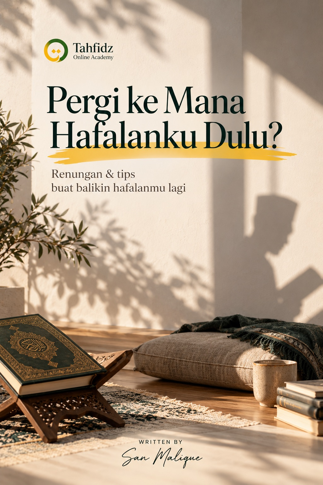
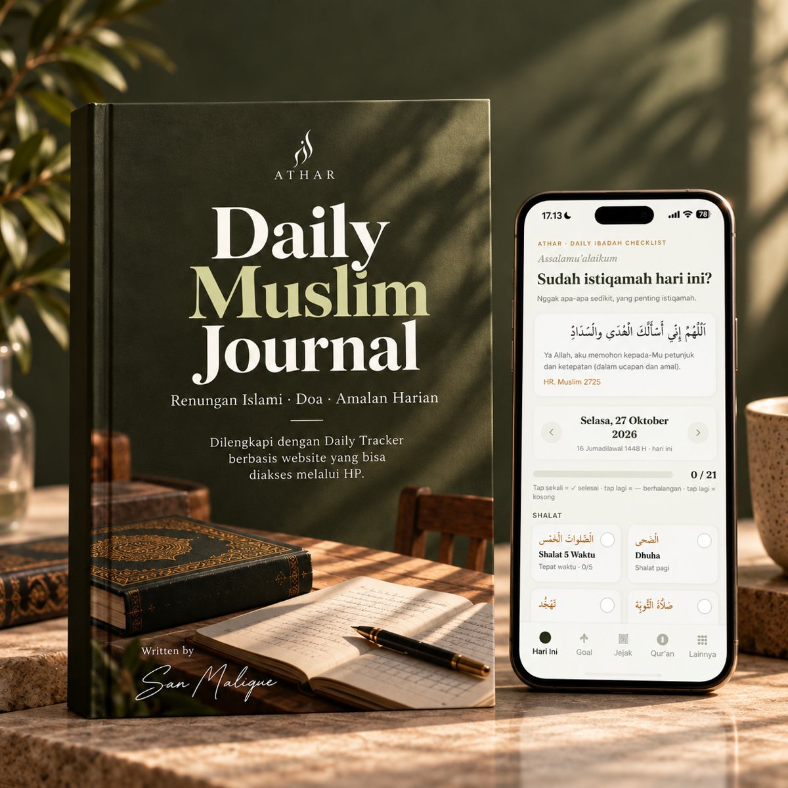
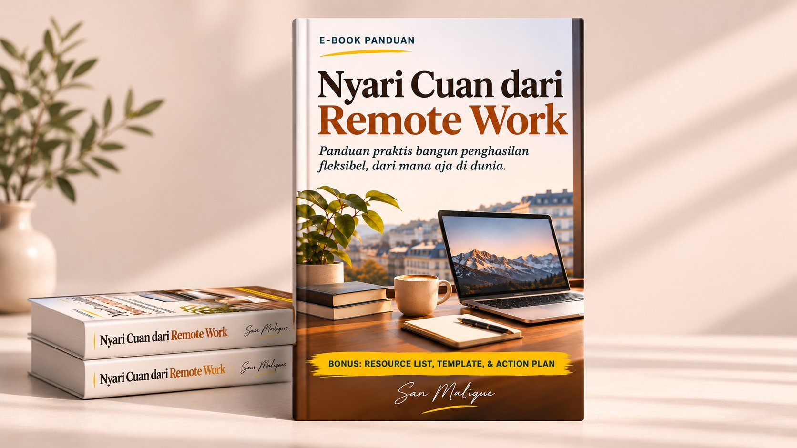

Ceritamu layak jadi buku. Biar aku yang nulis.
Kamu punya kisah, ilmu, atau pengalaman yang pengin diwariskan. Aku bantu ubah jadi buku atau e-book atas namamu, dari obrolan pertama sampai naskah final.
Konsultasi via WhatsApp →Kenapa buku itu belum ada
"Dari dulu pengin nulis buku, tapi nggak pernah selesai."
Kalimat ini sering banget aku dengar. Biasanya bukan karena ceritanya kurang menarik. Justru sebaliknya, ceritanya ada, ilmunya ada, pengalamannya kaya.
Yang bikin mentok itu hal lain: sibuk, bingung mulai dari mana, atau nggak percaya diri sama tulisan sendiri. Akhirnya buku itu cuma jadi wacana bertahun-tahun.
Di sinilah aku masuk. Kamu cukup cerita. Sisanya, dari menyusun alur sampai merangkai kalimat, aku yang kerjakan.
Untuk siapa
Cocok buat kamu yang…
- Pengusaha & tokohIngin membagikan perjalanan, prinsip, atau pelajaran bisnis lewat buku, tapi waktunya habis buat menjalankan usaha.
- Lembaga & yayasanButuh buku profil atau kisah perjalanan lembaga yang enak dibaca, bukan laporan kaku.
- Travel umrah & hajiIngin buku panduan atau kumpulan kisah jamaah sebagai karya yang bisa dibagikan ke calon jamaah.
- Siapa pun yang punya ceritaGuru, dai, praktisi, orang tua. Selama ada kisah yang layak diwariskan, kita bisa mulai.
Siapa yang menulis
Ditulis oleh San Malique
Salah satu bukuku, Mencari Cahaya Para Nabi di Tiga Kota Suci, menjadi bestseller. Dari situ aku belajar satu hal: buku yang dibaca orang bukan yang paling banyak teorinya, tapi yang paling jujur ceritanya.
Itu juga yang aku bawa ke bukumu. Tulisan yang terasa seperti suaramu sendiri, bukan tulisan yang hambar dan generik.
Paket
Dua pilihan format
E-book Pendek
±40–60 halaman
Pas untuk satu topik yang fokus: panduan praktis, kisah singkat, atau lead magnet untuk bisnismu.
Buku Standar
±100–150 halaman
Untuk kisah hidup, perjalanan lembaga, atau buku yang ingin dicetak dan dibagikan lebih luas.
- Wawancara dan pengumpulan bahan (Zoom atau email)
- Outline yang disetujui sebelum mulai menulis
- Penulisan per bab sampai naskah final
- 2x revisi
- Nama kamu di cover, kerahasiaan dijaga
Alur kerja
Dari cerita sampai naskah
- Brief & wawancaraKita ngobrol soal isi, tujuan, dan pembaca bukumu. Kamu cerita, aku yang tanya.
- Outline disetujuiAku susun kerangka bab. Kita sepakati dulu sebelum masuk ke penulisan.
- Penulisan per babNaskah dikirim bertahap, jadi kamu bisa kasih masukan sejak awal.
- Revisi & naskah finalDua kali revisi, lalu naskah siap untuk layout atau terbit.
Contoh karya
Beberapa buku dan e-book San Malique




FAQ
Yang sering ditanyakan
Nama siapa yang ada di cover?
Namamu. Buku ini sepenuhnya milikmu. San Malique bekerja di belakang layar.
Apakah orang lain akan tahu bukunya dibantu?
Tidak dari pihakku. Kerahasiaan proyek dijaga, dan aku nggak akan mencantumkan bukumu sebagai portofolio tanpa izinmu.
Aku nggak pandai bercerita. Bisa?
Bisa banget. Kamu cukup ngobrol santai, aku yang memandu dengan pertanyaan. Banyak cerita terbaik justru keluar dari obrolan, bukan dari tulisan.
Kalau bahannya sudah ada sebagian?
Lebih bagus. Catatan, rekaman ceramah, tulisan lama, atau dokumen lembaga bisa jadi bahan utama. Aku yang merapikan dan menyusunnya jadi buku utuh.
Bagaimana dengan penerbitan dan ISBN?
Untuk buku fisik, naskah bisa diteruskan ke penerbit atau percetakan partner untuk layout, ISBN, dan cetak. Biaya cetak ditanggung klien.
Yuk, mulai dari satu obrolan.
Ceritakan buku seperti apa yang kamu bayangkan. Konsultasi awal gratis.
Konsultasi via WhatsApp →